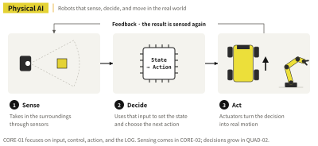

SAMPLE · Preview
Physical AI begins
the moment the robot moves
Excerpts from the prologue and the start of Chapter 1, translated from the Korean edition.
Prologue
Physical AI begins the moment the robot moves
Load the finished four-wheel robot with independent drive and steering and press W. All four wheels turn, and the body rolls forward. Press Z or C, and the wheels swing to a new angle before the body spins in place. Press Q or E, and all four wheels line up on the same diagonal. Press 1, and the screen folded against the body swings open.
The book opens with what actually moved when you pressed a key. Long stretches of Python come later, and only as much as you need. Did the wheels start turning right away? Did changing direction take a moment? How does the body come to a stop when you let go? What does the screen show, and when?
What is physical AI?
Physical AI covers systems that take in information from their surroundings or from a person, work out where things stand, choose the next action, and turn that choice into real motion through actuators such as motors and servos. That motion changes the surroundings and the input, which in turn shapes the next round of control.

CORE-01 doesn't try to build that whole loop at once. Instead of starting with sensors or learning-based decisions, it first pulls apart input → control → actuator → physical motion → observation and LOG. The keyboard input comes from a person, and the script follows rules written ahead of time. So the book doesn't call the CORE-01 robot an autonomous, sensor-driven AI robot. What it builds is the control framework that stays in place when sensors, state, and decisions are added later.
PART 1 · EXPERIENCE
Chapter 1. How Does Controls Mapping Move the Robot?
The first exercise doesn't use any code. The robot runs on the Controls Mapping already set up in Book-CORE-01-CONTROLS. The body responds the moment you press a key, and you see for yourself how each key changes its direction.
This chapter uses the driving keys W, S, A, D, Z, and C. Key 1 is Toggle Screen, which opens or folds the guide screen. Diagonal moves with Q and E first show up in Chapter 2, along with the script robot.
| Key | Expected action | What to watch | Done when |
|---|---|---|---|
| W | Forward | Which end is the front, direction of travel | Forward motion confirmed |
| S | Backward | Opposite of W | Backward motion confirmed |
| A | Turn left | How the body turns and moves | Difference from Z recorded |
| D | Turn right | How the body turns and moves | Difference from C recorded |
| Z | Spin left in place | Center of rotation, end position | Difference from A recorded |
| C | Spin right in place | Center of rotation, end position | Difference from D recorded |
| 1 | Toggle Screen | Folded / open | Switch confirmed |
1.1 W and S: forward, backward, and stopping
Pick which end is the front, then press W. The robot moves that way; press S and it backs up. You're not measuring speed yet. First check which way the body moved, whether all four wheels turned together, and what happens as it stops.
While you hold W, watch whether the body drifts to one side. With S, watch whether it backs straight up from the same spot. When you let go, note whether the body stops right away or slides a little farther. This becomes your baseline for comparing how the script robot stops later on.
Page previews
Images of a few pages from the book.
To see more of it in motion, watch the run videos on the web companion. The full explanations and exercises are in the book.